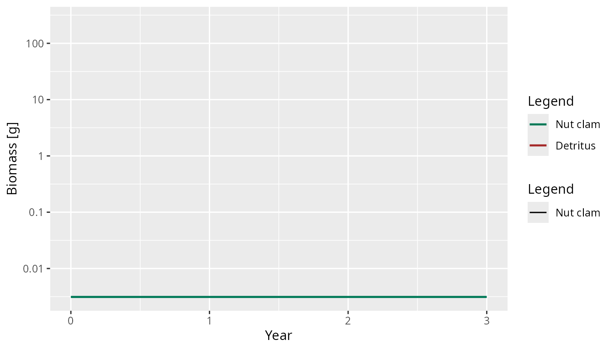
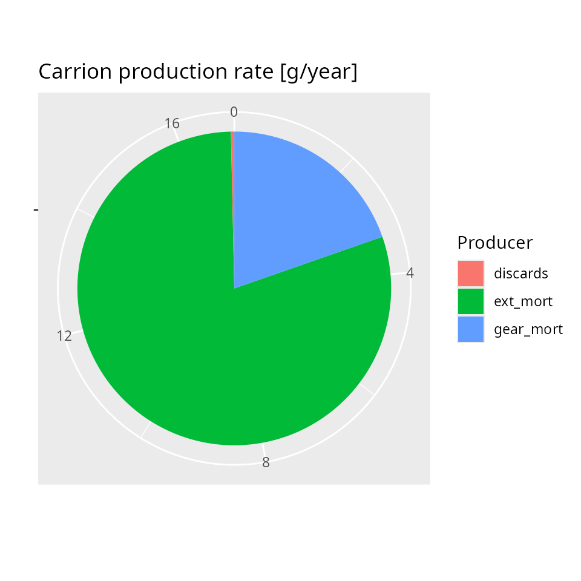
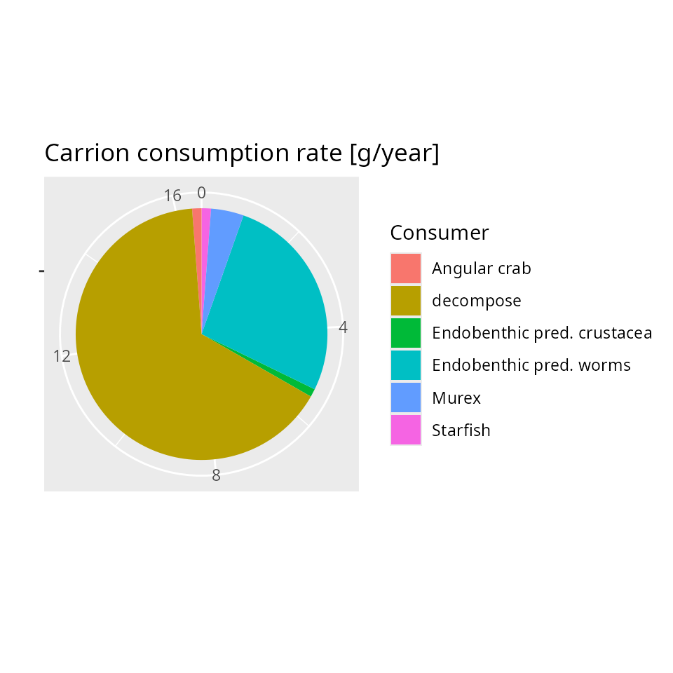

Overview
mizerShelf is an extension package for mizer that adds two extra ecosystem components to a standard multispecies size-spectrum model:
- detritus — particulate organic matter that settles to the seafloor and provides food for small benthic organisms and juvenile fish,
- carrion — fresh animal tissue from natural deaths, fishing gear mortality, and discards that is consumed by scavengers before decomposing into detritus.
Both components are dynamical: their biomasses change over time in
response to species abundances and fishing effort. The package uses four
of the five extension mechanisms described in
vignette("extensions", package = "mizer"):
| Extension mechanism | Used for |
|---|---|
setRateFunction() |
Replace standard mortality with shelf mortality that includes excess gear mortality |
| Resource dynamics override | Implement detritus dynamics in place of the default semi-chemostat resource |
setComponent() |
Add carrion as a scalar dynamical component that contributes to the encounter rate |
| S4 subclassing + S3 dispatch | Define mizerShelf/mizerShelfSim marker
classes for shelf-specific plotting, scaling, and species
manipulation |
All four mechanisms are wired together inside
newDetritusCarrionParams(), which is the single entry point
for building a shelf model.
The mizerShelf marker class
mizerShelf defines two S4 marker subclasses:
setClass("mizerShelf", contains = "MizerParams")
setClass("mizerShelfSim", contains = "MizerSim")These classes carry no extra slots. Their purpose is to trigger S3
dispatch so that shelf-specific behaviour is used automatically whenever
a user calls a mizer generic on a mizerShelf object. The
classes are marker classes in the sense described in
vignette("extensions", package = "mizer").
newDetritusCarrionParams() records the extension in
params@extensions and coerces the result to the
mizerShelf marker class:
params@extensions <- c(mizerShelf = as.character(packageVersion("mizerShelf")))
new("mizerShelf", params)Recording the extension in params@extensions is what
allows mizer to automatically produce a mizerShelfSim
whenever project() is called: mizer’s own
MizerSim() constructor calls
coerceToExtensionClass(), which reads
params@extensions, sees mizerShelf, and
coerces the new sim object to mizerShelfSim.
Methods dispatched on mizerShelf
The following S3 methods are dispatched on mizerShelf or
mizerShelfSim:
| Method | What it adds |
|---|---|
getBiomass.mizerShelf() |
Adds detritus and carrion biomasses to the species biomasses |
getBiomass.mizerShelfSim() |
Same, as a time series |
steady.mizerShelf() |
Calls tune_carrion_detritus() after convergence |
scaleModel.mizerShelf() |
Adjusts carrion encounter rates and external detritus input when rescaling abundances |
removeSpecies.mizerShelf() |
Updates the carrion encounter-rate matrix rho
|
addSpecies.mizerShelf() |
Computes the initial rho_carrion for new species |
Each of these methods calls NextMethod() so that it
first runs the standard mizer behaviour and then makes only the
shelf-specific adjustments.
Example: getBiomass
The standard getBiomass() returns only species
biomasses. The shelf version appends the detritus and carrion
biomasses:
getBiomass.mizerShelf <- function(object, ...) {
params <- object
b <- NextMethod() # standard species biomasses
d_biomass <- sum(params@initial_n_pp *
params@dw_full * params@w_full) # integrate resource spectrum
b <- c(b, Detritus = d_biomass)
scalar_other <- Filter(
function(x) is.numeric(x) && length(x) == 1,
params@initial_n_other)
if (length(scalar_other) > 0) b <- c(b, unlist(scalar_other))
b
}Because plotBiomass() calls getBiomass()
internally, this single override makes biomass plots show detritus and
carrion alongside fish species without any further changes.
getBiomass(NWMed_params)[1:3]
#> Small DF worms Small DF crustacea DF worms
#> 0.6514945 0.1603410 0.7829609
sim <- project(NWMed_params, t_max = 3, t_save = 0.5, progress_bar = FALSE)
plotBiomass(sim, species = c("Nut clam", "Detritus"))
#> Warning: Removed 7 rows containing missing values or values outside the scale range
#> (`geom_line()`).
Detritus: overriding the resource dynamics
Mizer’s standard resource spectrum follows a semi-chemostat towards a
carrying capacity. mizerShelf replaces this with
detritus_dynamics(), which is registered via the
resource_dynamics argument to
newMultispeciesParams():
params <- newMultispeciesParams(
species_params = species_params,
resource_dynamics = "detritus_dynamics",
...
)This is the lightest-weight way to change the resource because it
reuses all of mizer’s resource infrastructure — the size grid, the
resource abundance array n_pp, the
resource_mort rate, and so on — while replacing only the
update step.
The detritus ODE
The detritus spectrum is always held at a fixed power-law shape; only its overall biomass is dynamical. The biomass satisfies
where:
-
production comes from unassimilated food (faeces),
decomposing carrion, and an external input from the pelagic zone
(
getDetritusProduction()), -
consumption is the total rate at which species feed
on detritus (
detritus_consumption()), proportional to the current biomass, -
external is a tunable constant that represents
sedimentation from pelagic waters, stored in
other_params(params)$detritus$external.
detritus_dynamics() solves this ODE analytically within
each time step to avoid the instabilities of a simple Euler step:
where is the mass-specific consumption rate and is the production rate. The shape of the spectrum is then scaled to the new biomass:
detritus_dynamics <- function(params, n, n_pp, n_other, rates, dt, ...) {
current_biomass <- detritus_biomass(params, n_pp = n_pp)
consumption <- detritus_consumption(params, n_pp, rates) / current_biomass
production <- sum(getDetritusProduction(params, n, n_other, rates))
if (consumption) {
et <- exp(-consumption * dt)
next_biomass <- current_biomass * et + production / consumption * (1 - et)
} else {
next_biomass <- current_biomass + production * dt
}
n_pp * next_biomass / current_biomass
}The function receives n_pp (the current resource
spectrum), not the initial spectrum, so the update is applied to
whatever state the simulation is currently in.
Steady-state tuning
tune_carrion_detritus() adjusts the external detritus
input so that at the current abundances the detritus is at steady state
(dB/dt = 0):
params@other_params$detritus$external <- outflow - productionThis function is called automatically by
steady.mizerShelf() after mizer’s own steady-state
iteration converges.
User-facing controls
Two getter/setter pairs make it easy to calibrate the detritus:
-
detritus_biomass(params)— total detritus biomass in grams. -
detritus_lifetime(params)— the expected time a unit of detritus survives before being consumed, equal to . -
detritus_lifetime(params) <- value— rescales detritus abundance while keeping total consumption unchanged (by adjustinginteraction_resource).
detritus_lifetime(params)
#> [1] 1Carrion: adding a new dynamical component
Carrion is not naturally represented by any existing mizer structure:
it is a scalar total biomass (not size-structured), produced by
mortality and consumed by scavengers with a species- and size-dependent
encounter rate. It is registered as an other component via
setComponent():
params <- setComponent(
params, "carrion",
initial_value = 1,
dynamics_fun = "carrion_dynamics",
encounter_fun = "encounter_contribution",
component_params = list(rho = rho))The three arguments name the functions that mizer will call at each time step:
-
dynamics_fun = "carrion_dynamics"— updates the carrion biomass. -
encounter_fun = "encounter_contribution"— adds the carrion’s contribution to each species’ encounter rate. -
component_paramsstores therhomatrix (species × size) and a decomposition rate inother_params(params)$carrion.
Encounter contribution
The contribution of carrion to the encounter rate of species at body size is
where
is a species- and size-dependent encounter rate coefficient stored in
the component parameters. The function
encounter_contribution() is a generic helper that works for
any scalar other-component:
encounter_contribution <- function(params, n_other, component, ...) {
params@other_params[[component]]$rho * n_other[[component]]
}The rho matrix is initialised in
newDetritusCarrionParams() so that each species has enough
food from all sources (fish prey, detritus, and carrion) to reach a
feeding level of f0 at maximum body size.
Carrion dynamics
The carrion biomass satisfies the same ODE structure as the detritus:
-
production (
getCarrionProduction()) comes from three sources:- a fraction
ext_propof natural (non-predation) mortality, - excess gear mortality (
gearMort()), i.e. animals killed by the gear but not landed, - discards — landed animals that are thrown back.
- a fraction
-
consumption (
carrion_consumption_ms()) includes active consumption by fish scavenging carrion plus bacterial decomposition.
As with detritus, the ODE is solved analytically within each time step:
carrion_dynamics <- function(params, n, n_other, rates, dt, ...) {
consumption <- carrion_consumption_ms(params, n, rates)
production <- sum(getCarrionProduction(params, n, rates))
if (consumption) {
et <- exp(-consumption * dt)
return(n_other$carrion * et + production / consumption * (1 - et))
}
return(n_other$carrion + production * dt)
}Production and consumption breakdown
The package provides functions to inspect where carrion comes from and where it goes:
plotCarrionProduction(params)
plotCarrionConsumption(params)
User-facing controls
-
carrion_lifetime(params)— expected lifespan of carrion in years. -
carrion_lifetime(params) <- value— rescales the carrion biomass and its encounter-rate coefficients while keeping total consumption unchanged. -
carrion_human_origin(params)— fraction of carrion production that comes from fishing (gear mortality + discards). -
carrion_human_origin(params) <- value— adjustsext_prop(the fraction of natural mortality that produces carrion) to hit the target.
carrion_lifetime(params)
#> [1] 0.002739726
carrion_human_origin(params)
#> [1] 0.2The custom mortality rate
Standard mizer fishing mortality accounts only for fish that are
extracted from the water. Continental shelf fisheries also kill animals
that remain on the seabed after contact with bottom-trawl gear.
mizerShelf captures this distinction with a custom mortality function
registered via setRateFunction():
params <- setRateFunction(params, "Mort", "seMort")seMort() calls the standard mizerMort() and
adds the excess gear mortality on top:
seMort <- function(params, n, n_pp, n_other, t, f_mort, pred_mort, ...) {
mizerMort(params, n, n_pp, n_other, t, f_mort, pred_mort, ...) +
gearMort(params, f_mort = f_mort)
}gearMort() returns
max(gear_mort - f_mort, 0), where gear_mort is
a species parameter giving the total rate at which animals die due to
gear contact. When fishing mortality is below this cap, the remainder
enters total mortality and also enters the carrion production (via
getCarrionProduction()). When fishing mortality exceeds
gear_mort, excess gear mortality is zero.
The custom rate function receives and returns exactly the same array
shape as mizerMort() (species × size), so it is a drop-in
replacement that adds one ecological process without changing anything
else.
How the pieces fit together in
newDetritusCarrionParams()
All four extension mechanisms are wired up inside a single constructor:
newDetritusCarrionParams <- function(species_params,
w_min_detritus = NA,
w_max_detritus = 1,
n = 0.7, ...) {
# 1. Detritus: override resource dynamics
params <- newMultispeciesParams(
species_params = species_params,
min_w_pp = w_min_detritus,
w_pp_cutoff = w_max_detritus,
n = n, p = n,
resource_dynamics = "detritus_dynamics",
...)
# Initialise rho so each species can reach feeding level f0 at max size
f0 <- set_species_param_default(params@species_params, "f0", 0.6)$f0
ic <- set_species_param_default(
params@species_params, "interaction_carrion", 1)$interaction_carrion
E <- getEncounter(params)[, length(params@w)] /
(params@w[length(params@w)] ^ n)
rho <- pmax(0, f0 * params@species_params$h / (1 - f0) - E) * ic
params@species_params$rho_carrion <- rho
rho <- outer(params@species_params$rho_carrion, params@w ^ n)
# 2. Mortality: custom rate function adds excess gear mortality
params <- setRateFunction(params, "Mort", "seMort")
# 3. Carrion: scalar dynamical component
params <- setComponent(
params, "carrion", initial_value = 1,
dynamics_fun = "carrion_dynamics",
encounter_fun = "encounter_contribution",
component_params = list(rho = rho))
# 4. Marker class: enables S3 dispatch for shelf-specific methods
params <- setColours(params,
c(Detritus = "forestgreen", carrion = "peru"))
new("mizerShelf", params)
}The order matters. The resource dynamics are set inside
newMultispeciesParams() before mizer computes initial
rates, so the detritus shape is consistent from the start. The carrion
component is registered after the species parameters are set, so that
rho can be computed from the initial encounter rates. The
marker class is applied last, after all the standard mizer slots have
been populated.
Summary
mizerShelf illustrates all four of the core mizer extension mechanisms working together:
Resource dynamics override — detritus reuses mizer’s resource spectrum infrastructure with a custom ODE that tracks total biomass and rescales the spectrum shape.
setRateFunction()— the customseMort()adds excess gear mortality to the standard mortality calculation with a single-line wrapper aroundmizerMort().setComponent()— carrion is a scalar dynamical variable whose biomass evolves each time step and whose encounter-rate contribution is automatically included ingetEncounter()andgetDiet().S4 marker classes + S3 dispatch —
mizerShelfandmizerShelfSimensure that shelf-specific methods (getBiomass,steady,scaleModel,addSpecies,removeSpecies) are dispatched automatically, while every override delegates toNextMethod()so that the full mizer pipeline remains intact.
Together, these mechanisms allow mizerShelf to add two ecologically important processes — benthic detritus and carrion scavenging — to any mizer model without modifying the mizer source code.